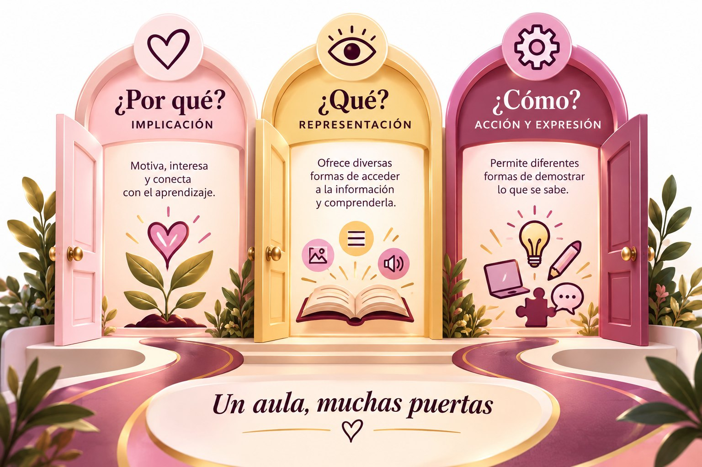

Plantilla de planificación DUA
Una hoja para planificar tu clase con opciones en los tres principios.
Hola, soy Cinthya Roque, docente de primaria y creadora de experiencias de aprendizaje. Este sitio es para quienes alguna vez pensaron "este niño no quiere aprender" y sospechan que la respuesta está en otro lado.
Toca cada tarjeta para ver lo que propone el DUA.
En mi clase hay una niña que no se queda quieta. Se mueve, dibuja, conversa… hace de todo menos lo que le pido. Un día nos tocó una lectura larga y un poco compleja. Apenas la vi, supe que ella no la iba a leer. Y así fue: charlaba con sus compañeras, dibujaba, se paraba.
Planifico con DUA todos los días, pero esa vez no alcancé a preparar una versión más sencilla para ella. Entonces hice lo que tenía a mano: me senté a su lado y la leímos juntas.
Avanzamos despacio, porque cada cinco palabras tenía algo que contarme. Pero estaba atenta, estaba aprendiendo, y se le notaba feliz de tenerme ahí.
No le faltaban ganas. Le faltaba una forma de entrar al texto.
A veces esa puerta es un audio o un dibujo. Y a veces es alguien que se sienta a tu lado. Por eso comparto lo que hago: para que más docentes encuentren esas puertas antes de que un estudiante se quede afuera.
El Diseño Universal para el Aprendizaje (DUA) nos invita a pensar en la diversidad del grupo desde el momento en que planificamos, y no recién cuando aparecen las dificultades.
Aquí encontrarás explicaciones sencillas, ejemplos reales de clase, una infografía, un video, una herramienta interactiva y un podcast para que conozcas el DUA y te animes a llevarlo a tu aula.
Al recorrer el sitio vas a descubrir qué es el DUA y por qué hace la diferencia en aulas diversas, conocer sus tres principios con ejemplos concretos, ver cómo se aplica en una clase real de primaria y llevarte ideas que puedes usar desde tu próxima clase.
Al terminar tu recorrido podrás:
Qué es el DUA, sus tres principios y la misma clase con dos diseños.
Explorar →Un episodio corto para escuchar y pensar en tu propia aula.
Escuchar →Revisa tu clase con la lista DUA y descarga materiales.
Ver recursos →Planifica con DUA en compañía de otros docentes.
Inscribirme →Dale play antes de seguir. En tres minutos vas a ver cómo se ve el DUA dentro de un aula real.
Video: el DUA en el aula · 3 min 20 s · con subtítulos
En cualquier aula hay estudiantes que leen con facilidad y otros que necesitan escuchar, niñas que se concentran mejor en movimiento, niños que se expresan mejor dibujando que escribiendo. Esa variedad es lo normal.
Por eso importa el DUA. Cuando planificamos para un estudiante "promedio", dejamos fuera a muchos. Cuando planificamos con opciones desde el inicio, el aprendizaje se abre para todo el grupo y hacemos menos adaptaciones de último momento.
El Diseño Universal para el Aprendizaje es un marco para planificar la enseñanza. Lo desarrolló el centro CAST, en Estados Unidos, a partir de investigaciones sobre cómo aprende el cerebro y cómo influye el entorno en ese aprendizaje.
La dificultad muchas veces no está en el estudiante, sino en una clase que ofrece un solo camino.
Si diseñamos con varios caminos para acceder a la información, participar y demostrar lo aprendido, más estudiantes llegan a la meta. El DUA no es un programa aparte para estudiantes con necesidades educativas: es una forma de planificar para todo el grupo.
Una rampa en la entrada de un edificio se pensó para personas en silla de ruedas. Hoy la usan también quienes empujan un coche de bebé, llevan una maleta o tienen una pierna lastimada. Lo que se diseña para algunos termina sirviendo a todos.
El DUA aplica esa misma lógica al aula: anticipar las barreras desde el diseño, en lugar de construir la rampa después.
Cada principio responde a una pregunta sobre cómo aprendemos. Elige uno para explorarlo.
¿Por qué aprendo?
Busca despertar el interés, sostener el esfuerzo y ayudar a que cada estudiante maneje sus emociones mientras aprende. Un estudiante que no encuentra sentido a la tarea se desconecta, aunque pueda hacerla.
Pruébalo mañana: empieza la clase contando para qué les va a servir lo que van a aprender.
Cada parte de la rueda es una de las 9 pautas del DUA. Al tocarla aparecen estrategias de ejemplo para el inicio, el desarrollo y el cierre de tu clase. Con el planificador armas una clase con opciones para todo tu grupo.
Una clase de inglés de 4to de primaria: leer un cuento corto y contar qué pasó. En cada momento de la clase, mira qué barrera crea el diseño tradicional y cómo la quita el DUA.
La meta no cambió. Cambiaron los caminos para llegar a ella, y se planificaron antes de la clase, no después.
Enseño inglés en 4to de primaria y trabajo junto a maestras sombra. Cuando mis estudiantes tienen que explicar lo que entendieron, uso un tablero de elección: cada uno decide si lo muestra con un dibujo, post-its de colores, un organizador gráfico, fotos, un video o un audio.
La meta es la misma para todos; cambia el camino.
"Trabajaron con más ganas, con más ímpetu, y me pidieron repetir la actividad."
Lo que pasó cuando mis estudiantes de 4to pudieron elegir
Alba Pastor, C. (2016). Diseño Universal para el Aprendizaje: educación para todos y prácticas de enseñanza inclusivas. Morata.
CAST. (2024). Universal Design for Learning Guidelines version 3.0. https://udlguidelines.cast.org
Un episodio para revisar, sin culpas, algunas cosas que hacemos en el aula y que dejan fuera a muchos estudiantes. Te cuento qué propone el DUA y te muestro un ejemplo de mi clase de inglés de 4to de primaria.
DUA en Acción · Episodio 1
¿Qué es el Diseño Universal para el Aprendizaje y por qué importa?
También puedes escucharlo y suscribirte en RSS.com.
Este podcast refuerza lo que trabajaste en la página "El tema". Te ayuda a reconocer prácticas comunes que generan barreras, recordar los tres principios del DUA con un caso real y pensar en un cambio concreto para tu propio grupo.
Puedes escucharlo de camino al colegio o mientras preparas tu clase.
Piensa en tu próxima clase: ¿qué barrera podría encontrar alguno de tus estudiantes, y qué opción podrías ofrecer desde el inicio para quitarla?
Tu compañera para planificar con DUA. En lugar de empezar de cero, tocas la parte de la rueda que necesitas, eliges entre estrategias listas para usar y armas una clase con opciones para todo tu grupo.
Una guía práctica de 43 páginas para entender el DUA y llevarlo el lunes a tu aula, sin importar si trabajas en inicial, primaria o secundaria.
Viene de regalo con la app. Mira algunas páginas antes de decidir.
Páginas de muestra
En el taller usamos la app en vivo y planificamos juntos una clase con DUA. Así la conoces antes de tenerla.
Piensa en una clase que ya tengas planificada. Marca lo que ya haces y descubre qué principio puedes fortalecer.

Marca lo que ya haces en tu clase.
Una hoja para planificar tu clase con opciones en los tres principios.
Seis formas de mostrar lo aprendido para que tus estudiantes elijan la suya.
La misma lista de esta página, en una hoja para tener junto a tu planificación.
Talleres prácticos para docentes. Sales con una clase planificada y con ideas que puedes usar la misma semana.
Conocemos los tres principios con ejemplos reales y planificamos juntos una clase con opciones para todo el grupo, usando la app DUA en Acción.
2026 · Taller para docentes
Cada participante aprendió a crear su propia app educativa con inteligencia artificial, paso a paso y sin saber programar.
Escríbeme por WhatsApp:
+591 78884586